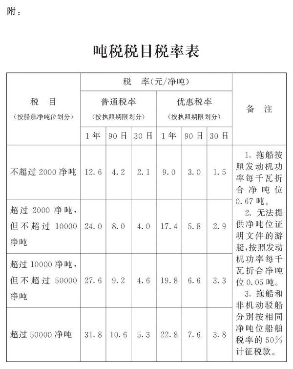

第一条 自中华人民共和国境外港口进入境内港口的船舶（以下称应税船舶），应当依照本法缴纳船舶吨税（以下简称吨税）。
第二条 吨税的税目、税率依照本法所附的《吨税税目税率表》执行。
第三条 吨税设置优惠税率和普通税率。
中华人民共和国籍的应税船舶，船籍国（地区）与中华人民共和国签订含有相互给予船舶税费最惠国待遇条款的条约或者协定的应税船舶，适用优惠税率。
其他应税船舶，适用普通税率。
第四条 吨税按照船舶净吨位和吨税执照期限征收。
应税船舶负责人在每次申报纳税时，可以按照《吨税税目税率表》选择申领一种期限的吨税执照。
第五条 吨税的应纳税额按照船舶净吨位乘以适用税率计算。
第六条 吨税由海关负责征收。海关征收吨税应当制发缴款凭证。
应税船舶负责人缴纳吨税或者提供担保后，海关按照其申领的执照期限填发吨税执照。
第七条 应税船舶在进入港口办理入境手续时，应当向海关申报纳税领取吨税执照，或者交验吨税执照（或者申请核验吨税执照电子信息）。应税船舶在离开港口办理出境手续时，应当交验吨税执照（或者申请核验吨税执照电子信息）。
应税船舶负责人申领吨税执照时，应当向海关提供下列文件：
（一）船舶国籍证书或者海事部门签发的船舶国籍证书收存证明；
（二）船舶吨位证明。
应税船舶因不可抗力在未设立海关地点停泊的，船舶负责人应当立即向附近海关报告，并在不可抗力原因消除后，依照本法规定向海关申报纳税。
第八条 吨税纳税义务发生时间为应税船舶进入港口的当日。
应税船舶在吨税执照期满后尚未离开港口的，应当申领新的吨税执照，自上一次执照期满的次日起续缴吨税。
第九条 下列船舶免征吨税：
（一）应纳税额在人民币五十元以下的船舶；
（二）自境外以购买、受赠、继承等方式取得船舶所有权的初次进口到港的空载船舶；
（三）吨税执照期满后二十四小时内不上下客货的船舶；
（四）非机动船舶（不包括非机动驳船）；
（五）捕捞、养殖渔船；
（六）避难、防疫隔离、修理、改造、终止运营或者拆解，并不上下客货的船舶；
（七）军队、武装警察部队专用或者征用的船舶；
（八）警用船舶；
（九）依照法律规定应当予以免税的外国驻华使领馆、国际组织驻华代表机构及其有关人员的船舶；
（十）国务院规定的其他船舶。
前款第十项免税规定，由国务院报全国人民代表大会常务委员会备案。
第十条 在吨税执照期限内，应税船舶发生下列情形之一的，海关按照实际发生的天数批注延长吨税执照期限：
（一）避难、防疫隔离、修理、改造，并不上下客货；
（二）军队、武装警察部队征用。
第十一条 符合本法第九条第一款第五项至第九项、第十条规定的船舶，应当提供海事部门、渔业船舶管理部门或者出入境检验检疫部门等部门、机构出具的具有法律效力的证明文件或者使用关系证明文件，申明免税或者延长吨税执照期限的依据和理由。
第十二条 应税船舶负责人应当自海关填发吨税缴款凭证之日起十五日内缴清税款。未按期缴清税款的，自滞纳税款之日起至缴清税款之日止，按日加收滞纳税款万分之五的税款滞纳金。
第十三条 应税船舶到达港口前，经海关核准先行申报并办结出入境手续的，应税船舶负责人应当向海关提供与其依法履行吨税缴纳义务相适应的担保；应税船舶到达港口后，依照本法规定向海关申报纳税。
下列财产、权利可以用于担保：
（一）人民币、可自由兑换货币；
（二）汇票、本票、支票、债券、存单；
（三）银行、非银行金融机构的保函；
（四）海关依法认可的其他财产、权利。
第十四条 应税船舶在吨税执照期限内，因修理、改造导致净吨位变化的，吨税执照继续有效。应税船舶办理出入境手续时，应当提供船舶经过修理、改造的证明文件。
第十五条 应税船舶在吨税执照期限内，因税目税率调整或者船籍改变而导致适用税率变化的，吨税执照继续有效。
因船籍改变而导致适用税率变化的，应税船舶在办理出入境手续时，应当提供船籍改变的证明文件。
第十六条 吨税执照在期满前毁损或者遗失的，应当向原发照海关书面申请核发吨税执照副本，不再补税。
第十七条 海关发现少征或者漏征税款的，应当自应税船舶应当缴纳税款之日起一年内，补征税款。但因应税船舶违反规定造成少征或者漏征税款的，海关可以自应当缴纳税款之日起三年内追征税款，并自应当缴纳税款之日起按日加征少征或者漏征税款万分之五的税款滞纳金。
海关发现多征税款的，应当在二十四小时内通知应税船舶办理退还手续，并加算银行同期活期存款利息。
应税船舶发现多缴税款的，可以自缴纳税款之日起三年内以书面形式要求海关退还多缴的税款并加算银行同期活期存款利息；海关应当自受理退税申请之日起三十日内查实并通知应税船舶办理退还手续。
应税船舶应当自收到本条第二款、第三款规定的通知之日起三个月内办理有关退还手续。
第十八条 应税船舶有下列行为之一的，由海关责令限期改正，处二千元以上三万元以下的罚款；不缴或者少缴应纳税款的，处不缴或者少缴税款百分之五十以上五倍以下的罚款，但罚款不得低于二千元：
（一）未按照规定申报纳税、领取吨税执照；
（二）未按照规定交验吨税执照（或者申请核验吨税执照电子信息）以及提供其他证明文件。
第十九条 吨税税款、税款滞纳金、罚款以人民币计算。
第二十条 吨税的征收，本法未作规定的，依照有关税收征收管理的法律、行政法规的规定执行。
第二十一条 本法及所附《吨税税目税率表》下列用语的含义：
净吨位，是指由船籍国（地区）政府签发或者授权签发的船舶吨位证明书上标明的净吨位。
非机动船舶，是指自身没有动力装置，依靠外力驱动的船舶。
非机动驳船，是指在船舶登记机关登记为驳船的非机动船舶。
捕捞、养殖渔船，是指在中华人民共和国渔业船舶管理部门登记为捕捞船或者养殖船的船舶。
拖船，是指专门用于拖（推）动运输船舶的专业作业船舶。
吨税执照期限，是指按照公历年、日计算的期间。
第二十二条 本法自2018年7月1日起施行。2011年12月5日国务院公布的《中华人民共和国船舶吨税暂行条例》同时废止。

责任编辑： 陶宏林